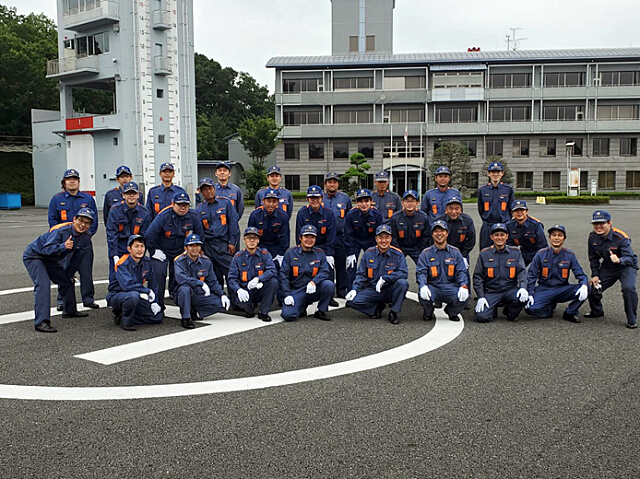
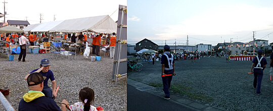
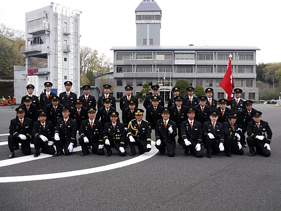

第7分団
| 管轄地区 | 栄町の一部、緑町、大字双柳、大字下加治、大字小久保、大字宮沢、大字平松、大字川崎、大字下川崎、大字新光、大字芦苅場、大字青木、大字中居 |
第7分団は地区により2部に分かれており、管轄北部の精明地区が第7分団1部、管轄南部の双柳・富士見地区が第7分団2部になっています。第7分団1部は、団員15名で活動しており、小型ポンプ積載車1台があります。第7分団2部は、団員14名で活動しており、平成27年1月に新しい多機能ポンプ車が入りました。
これからも、団員一丸となって、地域のために頑張っていきます。また、新入団員も随時募集しています。

令和2年度トピックス
◆2021年3月7日（日）火防巡視7分団管内での火防巡視を行いました。管内に点在する燃えやすいものが置いてある場所、枯れ草等の片付けがされてなく放置されている箇所を、団員が確認しました。また、管内の防火水槽の水位状況等についても確認しました。火災予防活動と団員内での防火水槽の位置確認等、7分団管内の現状が分かる火防巡視を実施することができました。
◆2020年12月26日（火）～30日（土）歳末特別警戒
今年の歳末は新型コロナウイルス感染症の感染予防の観点から、ポンプ車での広報活動のみ行いました。乾燥したこの時季、地域の火災予防に貢献できたと思います。
◆2020年11月22日（日）分団訓練
本年度は、コロナ禍により例年行われている特別点検が中止になりました。そこで7分団は分団訓練として各詰所の清掃作業を行いました。例年の大掃除等では手の届かなかった箇所まで清掃・整理整頓が行き届きました。
◆2020年10月17日（土）11月7日（土）メッツァ花火警備
10月17日（土）、10月24日（土）、11月7日（土）の3日間にメッツァ花火大会2020「森と湖と花火と。」が行われ、第7分団が担当区域であることから、うち2日間において警備を実施しました。内容は花火打ち上げ地点の散水、ジェットシューターを装備しての待機等でしたが、当日の天候により実施内容が変わりましたが、臨機応変に対応することができました。両日共に花火も無事打ち上がり、地元イベントの成功に貢献することができ、また、第7分団として初の花火警備であり良い経験をすることができました。
◆2020年10月25日（日）全団員訓練
コロナ禍での全団員訓練は、分団ごとに前半と後半に分けて行い、第7分団は後半に実施しました。訓練内容は観閲、服装規律、中隊訓練を実施しました。中隊訓練では動き方の細かい修正を行い、気を付けるべき注意点や部隊行動の大変さと重要性を学べました。時間は短めでしたが、集中して行い有意義な訓練となりました。

◆2020年9月13日（日）全分団訓練
今年の全分団訓練は、7分団だけでの中継送水訓練を平松、芦苅場地区を流れる南小畔川沿いで行いました。水利は河川から。2部ポンプ車を元ポンプ、ホース10本延長して中継ポンプを1部積載車。そこから火点へホース3本と筒先を用いて消火を行いました。訓練内容は中継送水訓練の各自習熟を行うこと。訓練を行うことにより現場で出てくる問題点と、それに対するアプローチ方法。普段行えない規模の訓練を通して、団員各自がいい経験になりました。
◆2020年8月25日（火）夜間分団訓練（中継送水訓練）
今月の分団訓練は中継送水訓練を行いました。2部ポンプ車が防火水槽を水利とする、元ポンプとした。そこからホース3本結合した先に、1部積載車を中継ポンプ。中継から先はホース1本に双口接手を接続して2股分岐させ筒先を2本用いての放水とした。飯能日高消防署内での訓練なので、水利から火点まで高低差は取れない。よってポンプへの負荷はほとんどかからない形でした。訓練最中に元ポンプの圧力変更や、人員配置の変更等を行いました。9月13日の中継送水訓練に向けて内容のあるいい訓練となりました。
◆2020年6月21日（日）基礎教育訓練（訓練礼式と座学）
令和2年度、コロナ禍における消防団活動を開始しました。今年度入団の新人への基礎教育訓練として、訓練礼式（基礎、服装規律等）と、「火災出動時の基本動作と各備品」という内容で座学を行いました。新人達は、緊張もしつつ真剣に訓練を受けていました。各詰所での限定された訓練でしたが、とてもいい内容で行えました。
◆2020年7月5日（日）飯能消防団分団訓練
今年度初めての他分団との合同訓練となった。「2、4、6、8、10、11分団」と「団本部、1、3、5、7、9分団」の2班に分け、時間をずらして行うというコロナ対策を取り入れて行った。訓練内容は、入場行進・観閲・服装規律の点検。訓練の終わりの頃に雨が降り出したので、分列行進等の訓練は取りやめとなった。集合の隊形が今までから変更となり、分団間隔2m、各団員の間隔も前後左右2mとるコロナ対策を取り入れたものとなった。7分団としては今年度行進時の「標員」を1部第一班長「小島」と、2部第一班長「滝田」が務めることになった。コロナ禍における消防団の訓練のありかたを模索し行っていく上で、いい訓練が行えたと思う。各団員が、訓練を通して反省点、感想等、抱いた物を次回以降の訓練を行う上でいかせていければ良いと思えた。
令和元年度トピックス
◆2020年2月23日(日) 岩沢グラウンド清掃例年はソフトボール大会を実施している飯能消防団の体力強化訓練ですが、会場として使わせていただいている岩沢グラウンド・阿須グラウンドには、まだ昨秋の台風19号の爪痕が残って使用不可能でした。今年度の体力強化訓練は、お世話になっているグラウンドの清掃作業を行いました。各分団で担当区域を定め、堆積した土砂を取り除いたり、流木を片付けたり、漂着したゴミを片付けたりしました。各団員の協力により清掃作業はかなり捗りましたが、全体の被害状況からするとまだまだ復旧にはほど遠いというのが実際のところではないでしょうか。改めて自然災害の脅威を感じるとともに、今回の訓練を活かして災害復旧でも市民の役に立てる消防団であろうと強く思いました。
◆2020年1月11日(土) 出初式
令和最初となる飯能消防団出初式が、市役所の駐車場にて執り行われました。市役所で出初式が行われるようになって3年目です。飯能日高消防署で行っていたときに比べ、一般市民の見学が増え、その数も年々増加しているように感じます。市民に消防団に対する親しみをもってもらうのに、とてもよいと考えます。今回は、さらに、飯能第一中学校吹奏楽部の皆さんが参加してくださいました。これまでは我々団員が行進する際の行進曲は録音音源でしたが、吹奏楽部の皆さんの生演奏の行進曲は迫力があり、清々しい気持ちで行進することができました。式の途中で数曲演奏してくだいましたが、団員も来賓も、また見学していた市民も楽しむことができました。市民の安全と安心を守るだけでなく、市民とともにある消防団として、今年も活躍していきたいと願う年初でした。
◆2019年12月25〜30日(水〜月) 歳末特別警戒
暮れも押し迫る12月25日から30日までの六日間、恒例の歳末特別警戒が行われました。交代で管轄地内を巡回し、火災予防を呼び掛けました。自治会長の皆さん、団本部の方々、後援会の方々が、激励に来てくださいました。おかげさまで無事に新年を迎えることができました。
◆2019年11月23日(土) 消防特別点検
市民の付託を受けて活動する我々消防団を支えているのは市民の税金です。市民の皆さんに、その税金を使ってやっている活動が期待に沿うものなのか、車両など器具や貸与されている服装はきちんと管理されているのか、規律正しく行動する訓練はなされているのか、それを見ていただくのが消防特別点検です。令和初となる特別点検は、雨が降っていたので、たいへん珍しい屋内での式典となりました。我らが第7分団は、2年ぶりに優良分団として表彰していただきました。たいへん名誉ある表彰ですが、ひとえに後援会をはじめとする地域の皆さんの協力あってのものと考えます。今後も地域防災に努めようと、兜の緒を締めました。
◆2019年11月3日(日) 飯能祭警備
毎年賑いを見せる飯能祭において、交通の安全を確保するために各分団で担当箇所を決めて交通整理を行いました。また、交代で雑踏を巡回警備しました。
◆2019年10月27日(日) 全団員訓練・交通法規講習
毎年10月下旬に行われる全団員訓練ですが、今年度は消防特別点検に向けた訓練を行いました。年度も半分を過ぎましたが、新入団員を交えての観閲・服装規律訓練は初めてとなりますので、ひとつひとつ確認しながら練習しました。小隊行進間訓練にも若干名、参加しました。訓練後、屋内訓練場にて飯能警察署の方をお招きして交通法規講習を受けました。近年、講習ではドライブレコーダーで録画された事故映像を視聴するようになり、安全運転における具体的な注意ポイントがイメージしやすくなりました。一般市民としても、また消防団員として二次的事故を引き起こさないためにも、安全運転に心掛けるように肝に命じました。
◆2019年10月12日(日) 台風19号警戒
台風19号は、非常に強い勢力のまま関東直撃コースをとり、記録的な暴風、記録的な豪雨が懸念されました。激しい風雨の中、溢水や土砂崩れがないか調査しながら管内を回り、地域住民への注意地喚起を行いました。また、地域で使ってもらうために自主的に土嚢を作り、活用してもらいました。今後もいつゲリラ豪雨や猛烈な台風が襲ってくるかわからないので、後日、詰所内に土嚢置き場を作り、いざというときにすぐ使えるようにしました。

◆2019年9月28,29日(土,日) 分団研修後援会
幹部、西村団本部班長とともに分団研修に行きました。立川防災館にて、消火訓練、地震体験などを行いました。訓練や体験を今後の消防団活動に活かせていければ、と思います。
◆2019年9月17日(火)、10月10日(木) 普通救命講習
傷病者が発生した場合、救急隊が来るまでの間の、バイスタンダー(その場に居合わせた人)による適切な応急手当が、傷病者の社会復帰の鍵を握ると言われています。消防団員は3年に一度は普通救命講習を受け、技術と知識を定着させ、いざというときに適切に動けるよう、訓練しています。消防団員の救命講習の指導には、消防団内の「応急手当普及員」があたっています。7分団には、利根川分団長以下、4名の応急手当普及員が在籍し、自らの技術を磨きながら、団員や地域住民への普及活動に勤しんでいます。
◆2019年9月8日(日) 自主防災訓練(精明地区)
非常に強い台風15号が迫る中、精明地区の自主防災訓練が開催されました。7分団本部と1部が参加し、
応急手当や初期消火の指導と消防車両の展示を行いました。また、小型ポンプ操法を披露しました。
◆2019年9月1日(日) 自主防災訓練(双柳小学校区、富士見地区)
地区の自主防災訓練に参加しました。今年度は双柳地区と富士見地区が同日開催となったので、他分団の応急手当普及員のサポートも受けつつ、団員をそれぞれの地区に分配して対応しました。団員は、応急手当や初期消火の指導、消防車両の展示などを行いました。
◆2019年8月27日(火) 分団訓練
今年度初めての夜間の分団訓練を行いました。途中から雨の降る中での訓練となりましたが、集中して実施することができました。訓練は部ごとに行い、1部は小型ポンプ操法の練習と、今回初めてポンプを触る新入団員に対するポンプ操作や筒先操作の指導とを行いました。2部は、ポンプ車操法の基礎的な練習と少人数での放水準備の訓練を行いました。
◆2019年8月15日(木) 八坂神社例祭底抜け屋台警備
毎年8月15日、八坂神社例祭において底抜け屋台が平松地内を練り歩きます。台風の影響で激しい雨が予想されましたが、時折降った強い雨は休憩時だけで、無事に町内を巡り終えました。7分団1部団員は、底抜け屋台が安全に運行できるよう、道中の交通整理を行いました。
◆2019年8月14日(水) 平松盆踊り警備
台風で開催が危ぶまれた平松地区の納涼盆踊り大会ですが、無事開催されました。お盆で帰省してきた子ども連れも含め、周辺地域から老若男女が集う盆踊り大会。その会場である円泉寺境内の出入り口にて、来場者の安全を確保するために警備しました。
◆2019年8月3日(土) 浅間夏祭り警備
猛暑日の夕方、あさま公園広場で行われた浅間夏祭りにおいて、会場に出入りする参加者の安全を確保するために警備しました。

◆2019年7月13,14日(土,日) 双柳神社夏季大祭底抜け屋台警備
双柳地区を練り歩く底抜け屋台の安全な運行のため、道中の警備を担当しました。また、2部詰所を開放し、底抜け屋台を曳く人、お囃子の人に休憩してもらいました。
◆2019年7月7日(日) 中継送水訓練
第8分団と合同で、飯能市大字南において、中継送水訓練を行いました。ブルーシートと土嚢を用いて沢を堰き止めて水利を確保し、第7分団のポンプ車で吸水、200m登ったところで第8分団のポンプで中継、さらに200m登ったところで放水訓練をしました。さらに、中継した先で2線、3線に分岐して放水する訓練も行いました。また、初めて目にする、ウォータルートを使った放水も体験しました。
終始小雨が降り注ぐ中での訓練でしたが、集中して取り組むことができ、意義のある訓練となりました。指導に来てくださった稲荷分署、日高分署の署員のかたにも、よい訓練内容だった、とのご講評をいただきました。
◆2019年5月26日(日) 飯能新緑ツーデーマーチ
5/25,26の二日間にわたり、市内で第17回飯能新緑ツーデーマーチが行われました。第7分団は二日目の5/26(日)、精明地区において、参加者の安全を確保すべく、警備を担当しました。
◆2019年5月19日(日) 全分団訓練
全分団訓練と分団での訓練を行いました。全分団訓練はいつものように入場行進・観閲・服装規律・分列行進という基礎的な訓練を行いました。いつもの訓練内容ではありますが、新入団員を交えての初めての訓練であり、ひとつひとつ確認しながら実施しました。最後にはだいぶ形になってきました。全分団訓練終了後、班ごとに別れ、救助資機材の訓練とポンプ車による放水訓練を行いました。救助資機材やポンプ車の操作は、新入団員にとってはもちろん初めてのことでしたし、久々の団員も少なくありませんでした。技術を身に付けるという意味で、よい訓練となりました。繰り返しこのような訓練を実施し、いざというときに自信を持って操作できるようにしていきます。
◆2019年4月14日(日)飯能消防団入団式
散り際の桜の下、飯能消防団の入団式が挙行されました。5年ぶりに団長の交代があり、7分団出身の新井安典新団長が就任されました。わが7分団も1部に建部法昭君、加藤竜也君、2部に小池祐輔君の計3名の新入団員を迎えました。団長出身分団として、新井新団長の名を汚さぬよう、いっそう気を引き締めて消防団活動に精進しようと団員一同で誓いました。
